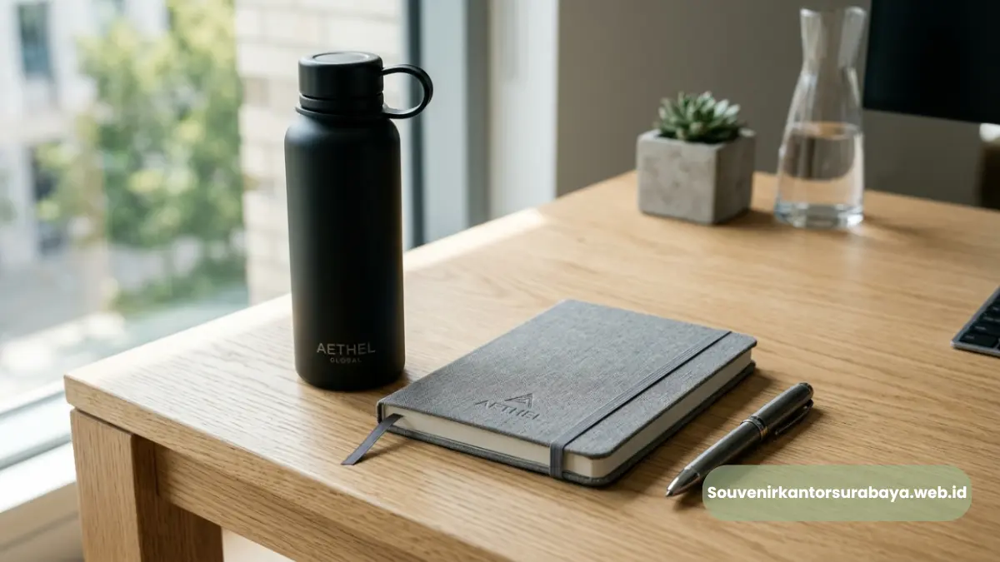
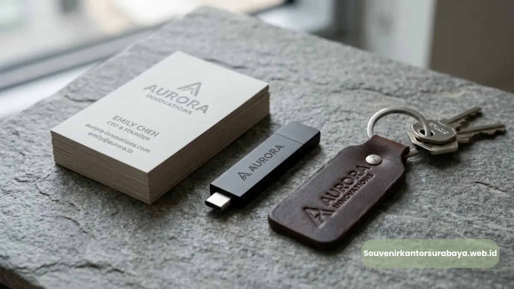
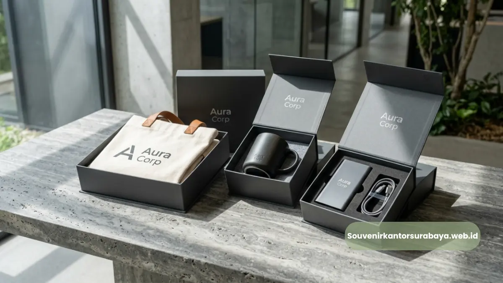
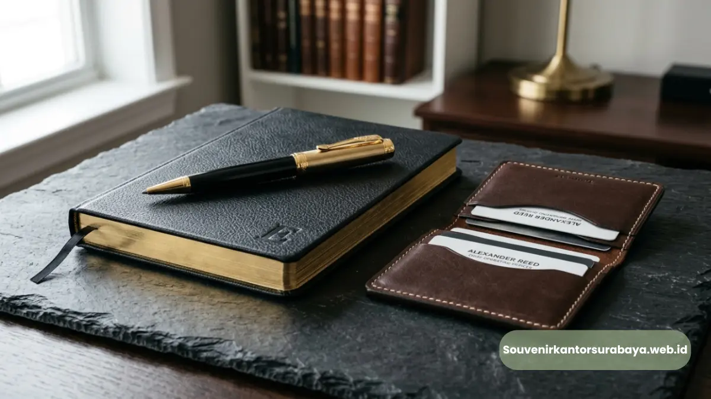

Merchandise Surabaya Custom Logo untuk Branding Kantor Anda
Merchandise Surabaya custom logo adalah produk promosi yang dicetak khusus dengan identitas visual perusahaan, seperti nama merek atau simbol logo resmi.
Layanan ini membantu perusahaan memperkuat pengenalan merek pada setiap produk yang dibagikan.
Proses pemesanannya kini dapat dilakukan secara praktis melalui layanan daring khusus merchandise korporat.
- Custom logo dapat diterapkan pada berbagai jenis merchandise, mulai dari alat tulis hingga elektronik ringan.
- Teknik cetak yang digunakan memengaruhi daya tahan logo pada permukaan produk.
- File desain berformat vektor mempercepat proses produksi dan menjaga ketajaman hasil cetak.
- Custom logo yang konsisten memperkuat identitas visual perusahaan di berbagai media promosi.
Apa Itu Merchandise Surabaya Custom Logo?
Merchandise Surabaya custom logo adalah kategori produk promosi yang dicetak khusus dengan elemen visual perusahaan, seperti logo, nama brand, atau slogan tertentu, sesuai brand guideline yang telah ditentukan.
Produk ini berbeda dari merchandise generik karena dirancang khusus untuk mewakili identitas satu perusahaan tertentu.
Proses pembuatan custom logo umumnya melibatkan tahap desain, penyesuaian ukuran cetak, hingga pemilihan teknik cetak yang sesuai dengan jenis material produk.
Setiap material memiliki karakteristik berbeda, sehingga teknik cetak juga perlu disesuaikan agar hasil akhir tetap presisi dan tahan lama.
Teknik Cetak yang Umum Digunakan pada Merchandise
Beberapa teknik cetak yang umum digunakan antara lain sablon, bordir, ukir laser, dan cetak digital. Pemilihan teknik biasanya disesuaikan dengan jenis permukaan produk, misalnya ukir laser untuk material kayu atau metal, dan bordir untuk produk berbahan kain.

Merchandise Surabaya Logo Ukir Produk Korporat.
Pentingnya File Desain Berformat Vektor
File desain berformat vektor sangat disarankan karena menghasilkan logo dengan garis lebih tajam dan tidak pecah saat diperbesar, terutama untuk produk dengan area cetak kecil seperti pulpen atau flashdisk.
Mengapa Custom Logo Penting untuk Branding Perusahaan?
Custom logo penting karena menjadi identitas visual yang membedakan satu perusahaan dengan lainnya di tengah banyaknya produk promosi sejenis di pasaran. Logo yang konsisten pada setiap merchandise membantu memperkuat pengenalan merek dalam jangka panjang.
Prinsip ini juga berlaku pada merchandise fisik, karena setiap kali produk digunakan, logo perusahaan turut terekspos kepada lingkungan sekitar penerima.
Bagaimana Proses Cetak Logo pada Merchandise Berlangsung?
Proses cetak logo pada merchandise umumnya dimulai dari konsultasi desain, penyesuaian ukuran dan posisi logo, proses cetak sesuai teknik yang dipilih, hingga tahap quality control sebelum produk dikirim ke perusahaan pemesan.
Setiap tahap ini bertujuan memastikan hasil akhir sesuai dengan brand guideline yang telah disepakati.
Perusahaan yang belum memiliki file desain vektor biasanya dapat berkonsultasi terlebih dahulu terkait format logo yang sesuai, sehingga proses produksi tetap berjalan efisien tanpa mengurangi kualitas hasil cetak.
Merchandise Surabaya custom logo menjadi solusi efektif bagi perusahaan yang ingin memperkuat identitas visual merek melalui produk fisik yang digunakan sehari-hari oleh karyawan maupun klien. Ketepatan teknik cetak dan kualitas file desain sangat menentukan hasil akhir produk.
Jika perusahaan Anda membutuhkan merchandise dengan custom logo yang presisi dan proses pemesanan yang mudah, kunjungi souvenirkantorsurabaya.web.id sekarang untuk konsultasi desain dan penawaran terbaik.

Hawa Nadira
Tim penulis CorporateGifts ID berfokus pada strategi souvenir kantor, merchandise korporat, dan inovasi brand untuk klien B2B.
Keahlian: Branding perusahaan, produksi souvenir, paket event, desain materi promosi.
Artikel Terkait

Kapan Waktu Tepat Pesan Merchandise Surabaya Kantor Anda
Waktu tepat memesan merchandise Surabaya untuk acara kantor adalah dua hingga empat minggu sebelum tanggal pelaksanaan, tergantung jumlah pesanan dan tingkat kompleksitas custom logo.
Baca Selengkapnya
Merchandise Surabaya Premium untuk Branding Korporat Anda
Merchandise Surabaya adalah barang promosi berlogo perusahaan yang dipesan khusus untuk kebutuhan branding, hadiah klien, dan acara korporat.
Baca Selengkapnya
Ide Merchandise Surabaya Elegan untuk Klien Bisnis Anda
Ide merchandise Surabaya yang elegan untuk klien bisnis meliputi gift set eksklusif, map kulit sintetis, dan tumbler premium berlogo perusahaan.
Baca Selengkapnya